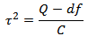
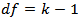
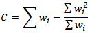

You can choose a random-effects method for a meta-analysis as follows:
- Select Random-Effects in the analysis method field of the Method & Parameters dialog.
- Select one of the random-effects methods in the Random method field.
Random-Effects Methods
The following random-effects methods are available:
- Hedges estimator (HE)
- DerSimonian-Laird (DL)
- Sidik-Jonkman (SJ) - Sidik, K. & Jonkman, J. N. (2005a) A note on variance estimation in random effects meta-regression. Journal of Biopharmaceutical Statistics, 15, 823–838.
Sidik, K. & Jonkman, J. N. (2005b) Simple heterogeneity variance estimation for meta-analysis. Journal of the Royal Statistical Society, Series C, 54, 367–384.
- Maximum likelihood (ML)
- Restricted maximum likelihood (REML)
- Empirical Bayes (EB)
Hedges Estimator
Reference: Hedges, L. (1981) Distribution theory for Glass's estimator of effect size and related estimators. Journal of Educational Statistics, 6, 107-128
DerSimonian-Laird
In the DerSimionian-Laird method, the heterogeneity τ2 is estimated as follows:

where



In the random effects model, the weight assigned to each study is
Reference: DerSimonian, R. & Laird, N. (1986) Meta-analysis in clinical trials. Controlled Clinical Trials, 7, 177–188.
Diagnostic Methods
- Bivariate (Maximum Likelihood)
- HSROC (Hierarchical Summary Receiver Operating Characteristic)
- Fixed-effect inverse variance
- Random-effects
Back to top
 | The Open Meta-Analyst Window | | Creating a New Data Set |  |